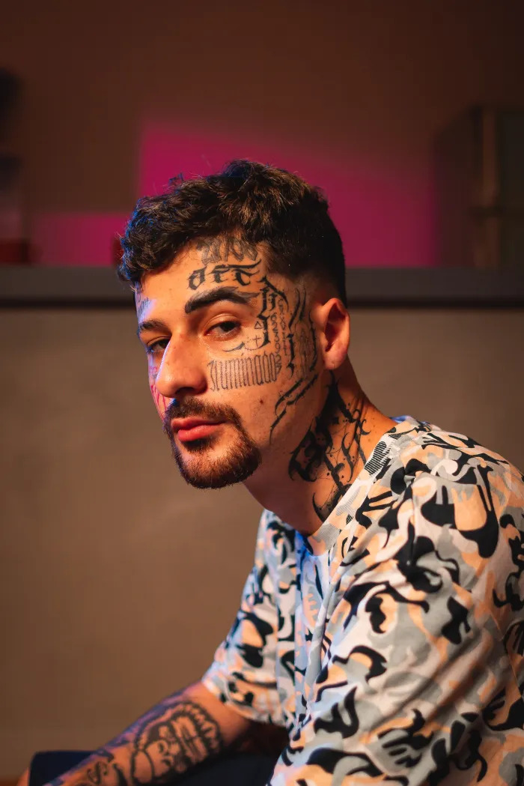
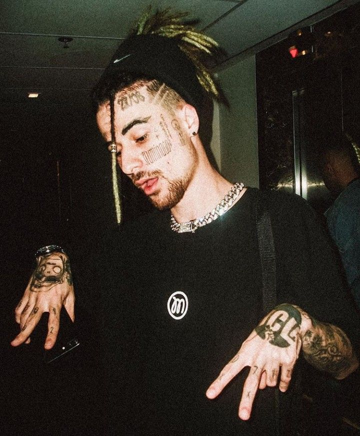

No interior de SP, no ano de 1995, Eduardo da Silva, ou Duzz, nasce em uma cidadezinha chamada Avaré. Hoje, a população da cidade tem em torno de 90.000 habitantes. E entre quase 100 mil pessoas, uma nasceu para se destacar e iluminar a sua geração com letras quentes mesmo em tempos tão frios.
Sem muita enrolação, o menino Duzz começou a colocar a cara na internet nos tempos em que os gamers já exploravam o YouTube. De vez em quando ele menciona que algumas pessoas o seguem desde a época do Point Blank.
Não há como afirmar, mas o vulgo do artista seria supostamente uma fusão do seu nick de gamer “DS” com um artista que é referência para o seu trabalho, o rapper norte-americano Russ. Mas esta não é a única influência de Duzz, afinal, nem é preciso fazer muito esforço para encontrar os traços do rock em sua arte.
Sobre os primeiros trabalhos da carreira do artista, hoje é difícil ser preciso, pois alguns projetos foram deletados do canal. Mas há indícios de que ele começou seus lançamentos no YouTube em 2013. Segundo o Universo Estranho, ‘O X da questão’ seria o seu EP de entrada.
Duzz começou a ganhar destaque com lançamentos como "Nota 10" e "Kurt Cobain (Acústico)", que demonstram sua habilidade lírica e versatilidade musical. Suas composições frequentemente exploram temas pessoais e introspectivos, além de abordar questões sociais e do cotidiano (Apple Music - Web Player) (Deezer).
Entre suas músicas mais populares estão "Lobo-Guará", uma colaboração com Sobs, Sos e Vk Mac, e "Safadinha", que conta com a participação de Sueth, Sobs e Sos (Shazam). Duzz também é conhecido por suas performances ao vivo energéticas e sua presença marcante nas plataformas de streaming e redes sociais.
Além de seu trabalho solo, Duzz continua a colaborar com outros membros do UCLÃ, ajudando a fortalecer a presença do coletivo na indústria musical brasileira. Seu trabalho é amplamente reconhecido por fãs e críticos, consolidando sua posição como uma das vozes mais promissoras da nova geração do rap brasileiro (TikTok Music).
